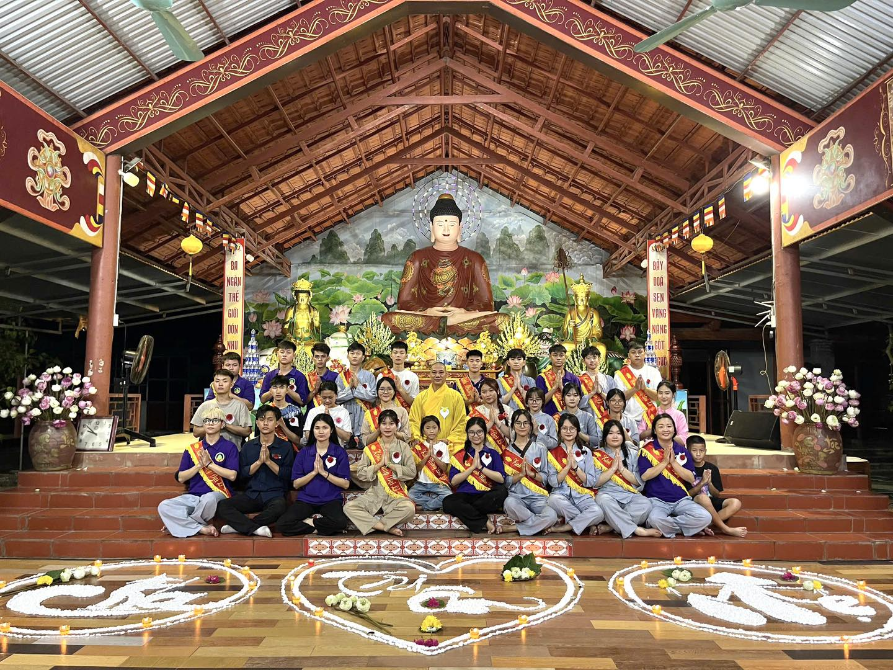
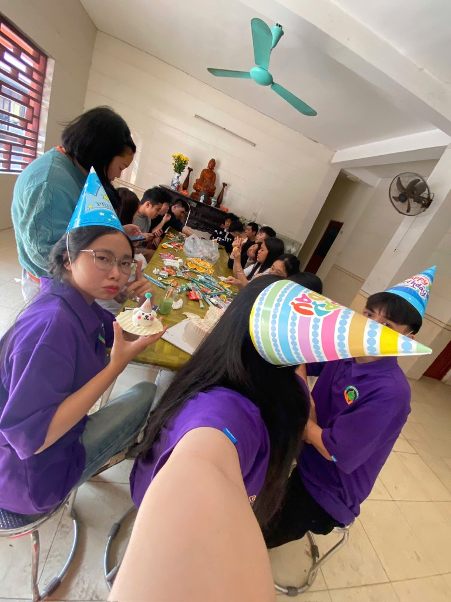
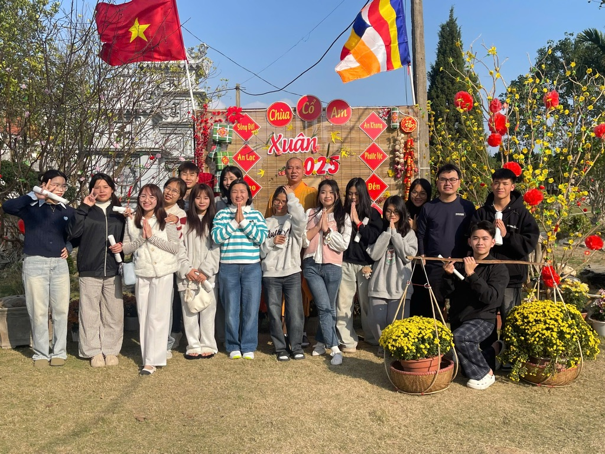
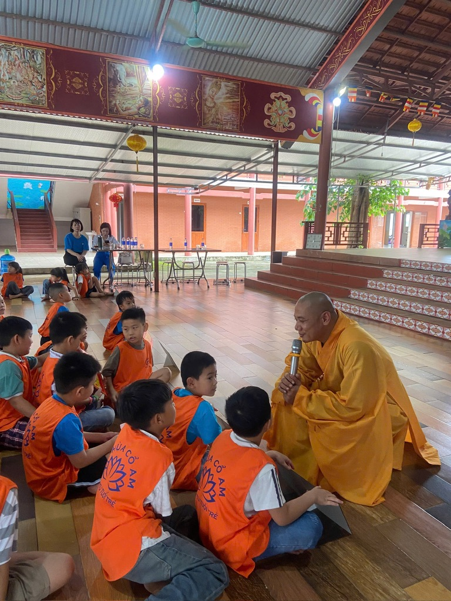

Về Chúng Tôi & Lịch Sử Hình Thành
1. Câu lạc bộ Tín Nguyện: Chốn Bình Yên Để Yêu Thương Và Cống Hiến
Câu lạc bộ Tín Nguyện trực thuộc Chùa Cổ Am (Liên Phương, Hưng Yên) là mái nhà chung quy tụ những người con có tâm đạo, khát khao phụng sự nhân sinh. Hơn cả một tổ chức thiện nguyện, CLB là không gian để những người phát tâm tín nguyện có một chốn lui về để "sống chậm lại", tìm thấy sự bình yên, nghỉ ngơi sau những lo toan thường nhật và cùng nhau làm những việc thiện lành, tích đức cho đời.

2. Cơ duyên thành lập: Bắt đầu từ mùa hè năm 2019
Hành trình của Tín Nguyện được ươm mầm một cách rất đỗi tự nhiên vào mùa hè năm 2019. Khi ấy, chưa có tên gọi hay cơ cấu tổ chức rõ ràng, tiền thân của CLB chỉ đơn thuần là những người mang trong mình tín tâm, tập hợp lại để về chùa phụ giúp Thầy Thích Đồng Tường tổ chức khóa tu mùa hè đầu tiên. Chính từ cơ duyên gắn kết và sự đồng lòng trong công việc Phật sự năm ấy, mọi người đã quyết định gắn bó lâu dài cùng nhau, chính thức đặt nền móng hình thành nên Câu lạc bộ Tín Nguyện.

3. Hành trình phát triển và Những dấu ấn tự hào
Trải qua nhiều năm nỗ lực không ngừng, từ những bước đi chập chững ban đầu, CLB nay đã phát triển vững mạnh với 49 thành viên chính thức dưới sự dẫn dắt tâm huyết của Chủ nhiệm câu lạc bộ - chị Phượng. Điểm tự hào lớn nhất của Tín Nguyện chính là tinh thần nhiệt huyết: luôn có một đội ngũ nòng cốt từ 10 - 20 thành viên sẵn sàng thu xếp công việc cá nhân để có mặt bất cứ lúc nào nhà chùa và cộng đồng cần đến. Bên cạnh đó, sức lan tỏa của CLB còn thu hút đông đảo các bạn tình nguyện viên sẵn sàng đăng ký tham gia hỗ trợ qua Fanpage mỗi khi có sự kiện mới.
Trên chặng đường phụng sự, Tín Nguyện đã tổ chức thành công rất nhiều chương trình ý nghĩa. Dấu ấn lớn nhất và thành công rực rỡ nhất phải kể đến Khóa tu mùa hè năm 2023 với hai đợt tổ chức liên tiếp diễn ra vô cùng tốt đẹp. Không dừng lại ở đó, các hoạt động thường niên như Trung thu cho em hay Đại lễ Vu Lan báo hiếu luôn nhận được sự vinh dự góp mặt và ủng hộ nhiệt tình của đông đảo bà con nhân dân trong tỉnh, cũng như những người con xa quê hương trở về.

4. Tôn chỉ hoạt động và Hướng đi tương lai
Mang trong mình tinh thần "Đi để cống hiến - Sống để yêu thương", mục tiêu cốt lõi của Tín Nguyện trong tương lai là tiếp tục duy trì ngọn lửa nhiệt huyết, giữ vững các hoạt động ý nghĩa của CLB. Chúng tôi không ngừng hướng tới việc xây dựng một cộng đồng vững mạnh – nơi cái thiện được nhân rộng, nơi tuổi trẻ được cống hiến hết mình và cũng là nơi chở che, nuôi dưỡng tâm hồn cho những ai hướng về cửa Phật.
